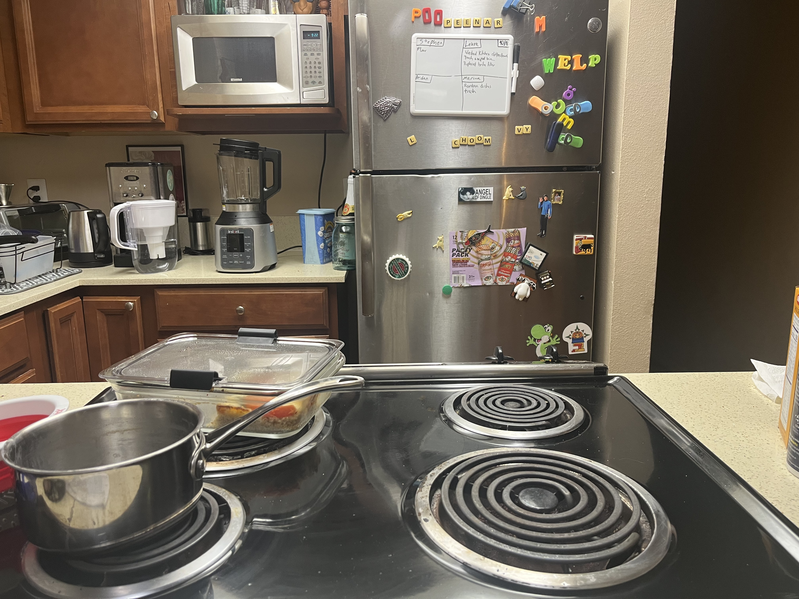

Marina started from knowing nothing about cooking to becoming the chef in her household after asking her mom for a few tips. This is where you'll learn some of her recipes that are famous among her roommates. Welcome!
Here is a glimpse into where all the magic happens:


Greek Salad
:max_bytes(150000):strip_icc()/229063-Classic-Restaurant-Caesar-Salad-ddmfs-4x3-231-89bafa5e54dd4a8c933cf2a5f9f12a6f.jpg)
Caesar Salad

Quinoa bake